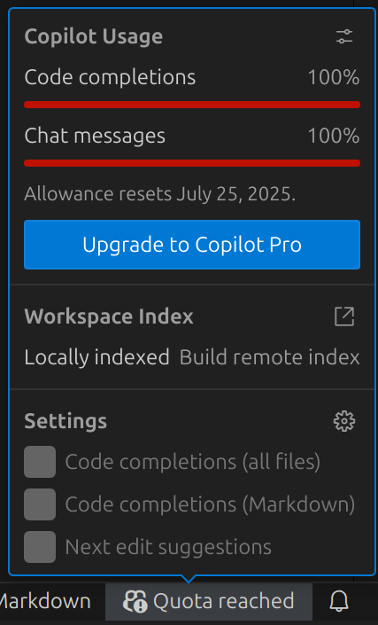

A flip puzzle
Top Spin was a puzzle in which 20 beads were placed on an oval track with a turntable, such that any four consecutive beads could be flipped. Naturally, I wondered whether it was possible to reverse the order of the beads, from [0, 1, ..., 19] to [19, 18, ..., 0].
As it turns out, this is possible even if the beads are placed on a straight track instead of an oval one. To create a routine for this, let us first examine successive cases of \(4k\) beads.
4 beads
Let \(f(i)\) denote flipping the four beads starting from position \(i\). For four beads, there is only one legal move \(f(0)\), and this successfully solves the puzzle:
8 beads
A brute-force search revealed a sequence of six flips that can reverse any length-8 segment:
Start: [0, 1, 2, 3, 4, 5, 6, 7]
f(0) → [3, 2, 1, 0, 4, 5, 6, 7]
f(2) → [3, 2, 5, 4, 0, 1, 6, 7]
f(0) → [4, 5, 2, 3, 0, 1, 6, 7]
f(4) → [4, 5, 2, 3, 7, 6, 1, 0]
f(2) → [4, 5, 6, 7, 3, 2, 1, 0]
f(0) → [7, 6, 5, 4, 3, 2, 1, 0]
For simplicity, let’s call the move above \(g(0)\). Shifting the pattern to the right produces \(g(i)\) for any \(i\) in \(\{0, 1, \ldots, n-8\}\).
12 beads
Solving the puzzle for \(4k\) beads, \(k>2\), relies on noticing that certain sequences of \(g()\) can be used to “bubble” a group of 4 beads to the end of the line. The case of 12 beads is shown here.
Let’s denote our 12 beads as [A, B, C] in the initial position. Let A' denote a reversed group A, etc.
Start: [A, B, C ]
g(4) → [A, C', B'] (Group B at rightmost 4-block)
g(0) → [C, A', B']
g(4) → [C, B, A ] (Group A at rightmost 4-block)
Apply f(0), f(4), f(8) to obtain:
[C', B', A']
It is worth noting that brute-force search found a 15-flip solution, compared to the 21-flip solution above (3 \(g()\) moves and 3 single flips):
However, it is still useful to come up with a general solution for all \(n=4k\), even if it is sub-optimal. Let’s continue.
16 beads
Start:
[A, B, C, D ]
g(8) →
[A, B, D', C'] (Group B at rightmost 4-block)
g(4), g(8) →
[A, D, B', C']
[A, D, C, B ] (Group B at rightmost 4-block)
g(0), g(4), g(8) →
[D', A', C, B ]
[D', C', A, B ]
[D', C', B', A'] (Group A at rightmost 4-block)
Notice how in the 12-bead case, we had to flip each 4-block after the bubbling operation, whereas in the 16-bead case, each 4-block is already in the correct orientation after bubbling. This pattern continues for larger values of \(n=4k\), with odd values of \(k\) requiring the final series of flips and even values of \(k\) not.
Generic case (Python)
To solve the puzzle for all \(n=4k\), I wrote (with the help of GitHub Copilot) the following program:
"""Flip puzzle -- reverse a list of 4k integers by flipping groups of 4 consecutive slots only."""
class List(list):
"""A sequence of integers with in-place flip operations."""
moves: list[int]
def __init__(self, a):
super().__init__(a)
self.moves = []
def f(self, i):
"""Flip 4 blocks in place starting from index i."""
assert i+4 <= len(self), 'Out of bounds.'
self.moves.append(i)
self[i:i+4] = self[i:i+4][::-1]
def g(self, i):
"""Reverse a group of 8 blocks using 6 in-place flips."""
for j in (0, 2, 0, 4, 2, 0):
self.f(i+j)
def reverse_by_fours(n):
"""Reverse a list of length n using only 4-block flips. Return the move list."""
assert n % 4 == 0, "length must be a multiple of 4"
a = List(range(n))
k = n // 4 # number of 4-blocks
# ---------- STAGE 1: triangular bubble pass
# Each pass of the outer loop moves one 4-block to the rightmost position,
# Leaving the relative order of the other 4-blocks unchanged.
#
# For example, for n = 20, the first (2nd, 3rd, 4th) pass moves the 4-block
# containing 12 (8, 4, 0) to the end. Additionally, the applications of move g()
# are: [12], [8, 12], [4, 8, 12], [0, 4, 8, 12].
for i in range(k-2, -1, -1): # outer loop (k-2 to 0)
for j in range(i, k-1): # inner loop (i to k-2)
a.g(4*j)
# ---------- STAGE 2: orient each block correctly (only if k is odd)
# We do this because the total number of flips for each 4-block is even if k is even,
# and odd if k is odd.
if k % 2 == 1:
for b in range(k):
a.f(4*b)
assert a == list(reversed(range(n))), "Sequence doesn't match target."
return a.moves
# Check
if __name__ == '__main__':
for n in range(4,60,4):
moves = reverse_by_fours(n)
print(n, len(moves))
Inspection of the loop structure reveals that the total number of flips for \(n=4k\) beads is $$ 3k(k-1) + \begin{cases} k, & \text{ if }k\text{ is odd}\newline 0, & \text{ if }k\text{ is even}. \end{cases} $$
GitHub Copilot experience
Luckily, despite many dead ends, laptop freezes (due to running out of memory when running breadth-first search), and garbage code spat out by GitHub Copilot (for example, generating sequences of flips that did not actually produce the target bead order), I was eventually able to produce the result above. I eventually reached my quota trying to ask Copilot additional questions, for example producing a bidirectional brute-force search for optimal solutions for \(n=4,8,12\).
Frankly, I probably would have spent quite a bit of time trying to implement breadth-first search, which Copilot implemented easily (thus finding me the \(g()\) sequence of six flips). Copilot was even able to recommend bidirectional search to cut down on the search complexity (searching from both the start and target states and meeting in the middle). On the other hand, it failed to implement the code for bidirectional search correctly – but I was able to manually fix the issue it flagged just before running out of quota.

Overall, it seems to me that Copilot is a useful tool, but, given the mistakes it made during this experience, can easily lead to as many headaches as it solves. Perhaps other AI tools would have done better. I still have many questions about AI and generative AI in particular, such as questions about liability (who gets penalised when AI accidentally causes harm? How to reduce harm in the first place?), intellectual property, and academic integrity, but those are for another day.
Academic study of the Top Spin puzzle
The original Top Spin puzzle is one of the studied examples in this book by Jamie Mulholland, in which it is proved that any permutations of the the beads is possible, and outlines a set of move combinations for solving the puzzle from any position. In contrast, the solution I found in this post is simple and explicit, but only applies to the special case of reversing exactly \(4k\) beads.
A paper on the generic case of the Top Spin puzzle with \(n\) beads and a width-\(k\) turntable is available here.